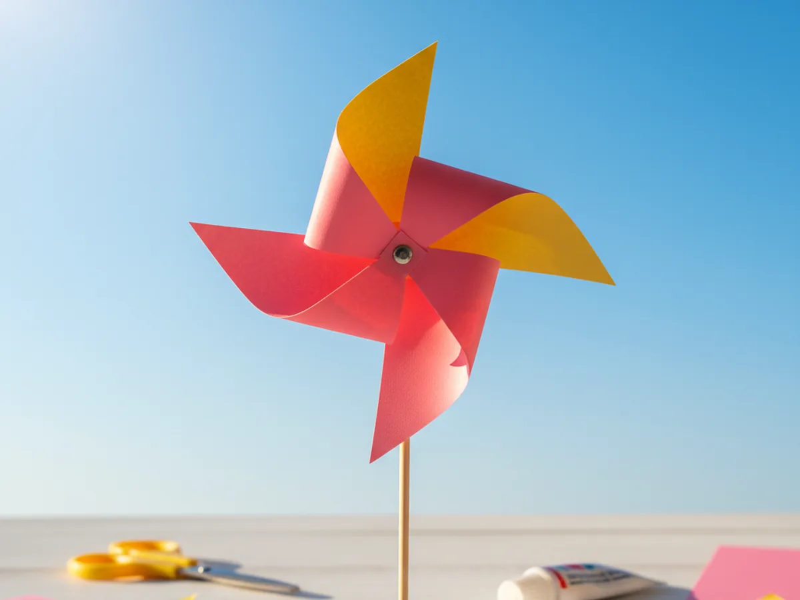
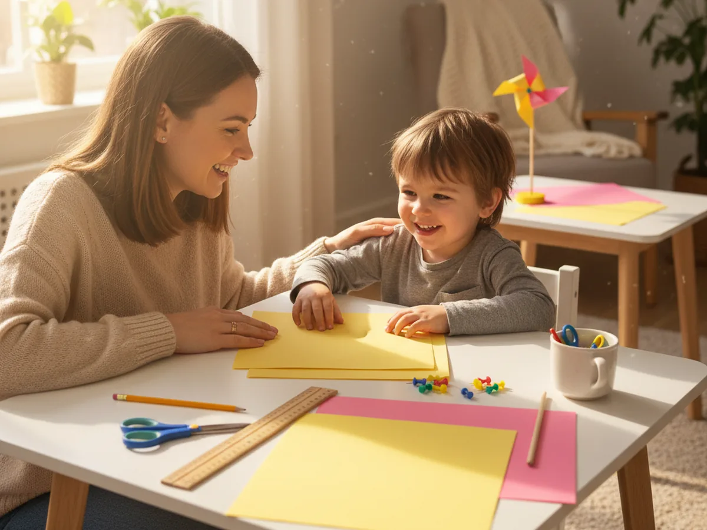
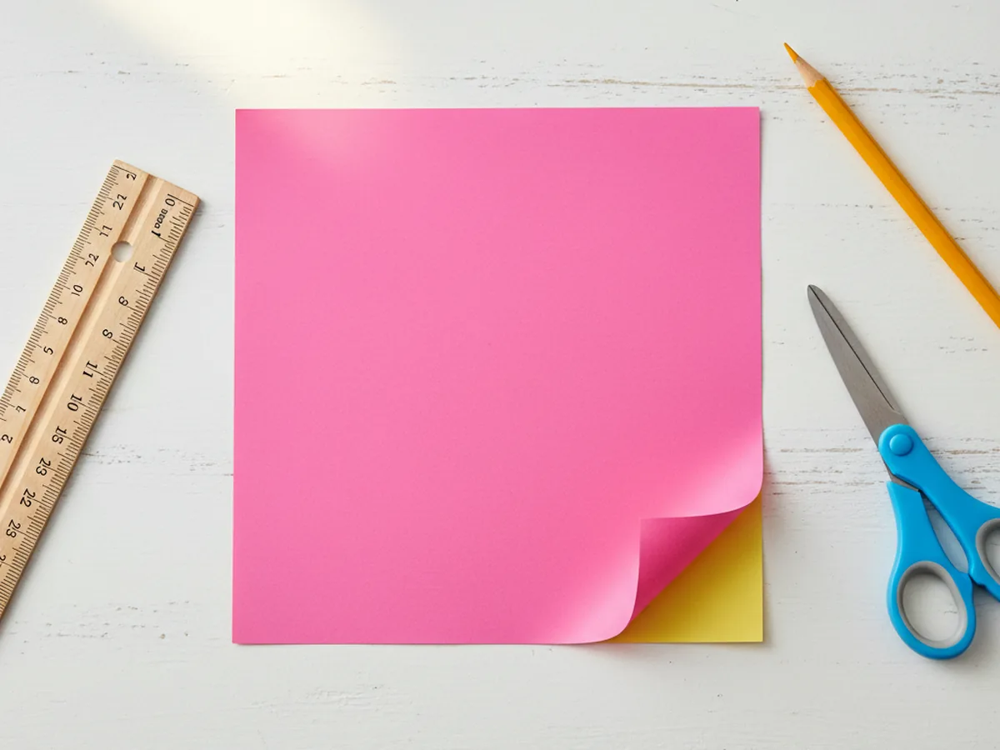
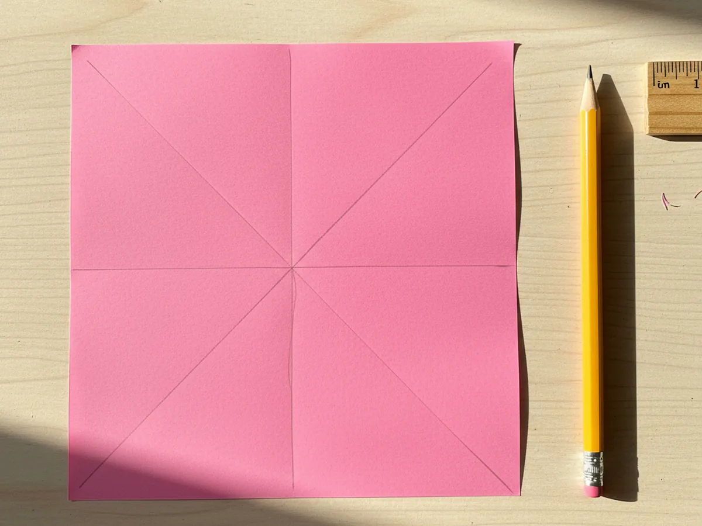
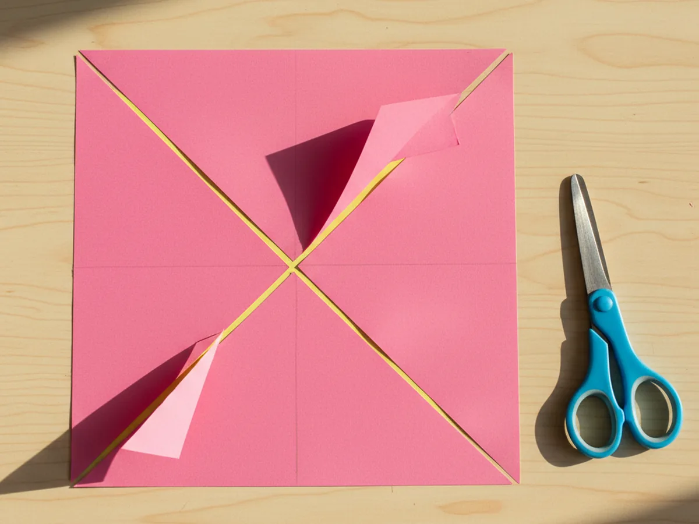
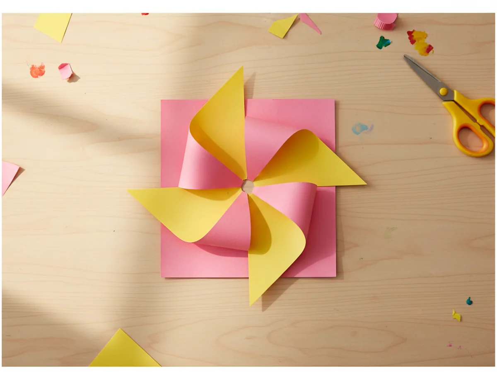
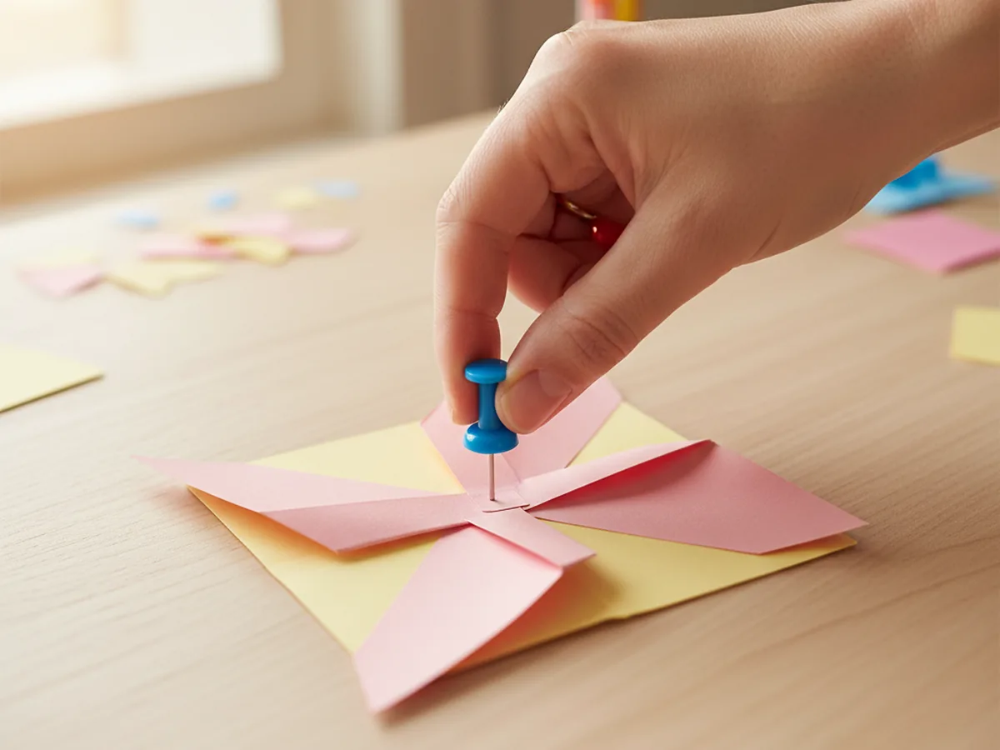
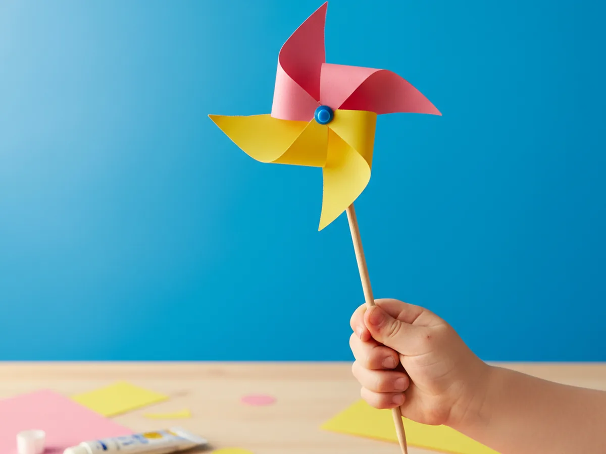

There is something pure and joyful about pulling out a square of bright paper, folding the corners just so, and watching a little windmill spin in the breeze for the very first time. This paper windmill craft takes about twenty-five minutes from start to finish and uses just a few supplies you probably already have at home. A square of paper, a push pin, a wooden dowel, and suddenly your child has a happy spinning toy they made all by themselves. 🌬️
The best part of this easy paper windmill craft is how foolproof it is once you know the simple fold trick. You do not need any special skills or fancy tools, and the result looks adorable every single time. Whether you make it for a sunny afternoon walk, a garden decoration, or a quiet living-room project on a windy day, your little one will be twirling and giggling within minutes.
Why Kids Love This Craft
Children fall in love with this paper windmill craft the second they see those blades start to spin. There is a small kind of magic in watching their own breath, or a soft puff of wind, make something they built with their own hands actually move. That instant cause-and-effect is incredibly satisfying for young kids, and they will want to blow on it over and over again, laughing every single time.
This windmill paper craft is also wonderful for sneaky learning. Cutting the perfect square strengthens scissor control, drawing the diagonal lines with a ruler practices early geometry, and folding each corner precisely into the center builds focus and fine motor skills. Even a four year old can manage most of the steps with a little gentle help, especially when mom handles the sharp push pin moment.
And then there is the pride. Holding up a finished spinning paper windmill and showing it off feels huge to a small child. They made it. It works. It moves in the wind. That feeling of "look what I built" is one of the sweetest parts of any handmade craft. 💕

What You'll Need
Here is everything you need to make this paper windmill craft at home. I like to set the supplies on the table beforehand so my little one can sit right down and dive into the fun part.
- Crayola Construction Paper (240 sheets, 12 colors), the perfect set for picking two cheerful windmill colors that pop against the sky.
- Fiskars 5 inch Blunt Tip Kids Scissors, safely sized for little hands to cut the square and the diagonal blade lines.
- Westcott 12 inch Wood Ruler, helpful for measuring a clean square and drawing the two diagonal lines straight from corner to corner.
- Crayola Broad Line Markers (10 classic colors), lovely for decorating the windmill blades with hearts, stars, or dots before folding.
- BetyBedy Push Pins (400 pack, assorted colors), the small colorful pin that holds the windmill center together and pierces the dowel.
- Wooden Dowel Rods (1/4 x 12 inch, 50 pack), the perfect lightweight handle for the spinning windmill, easy for small hands to hold.
- A pencil for marking the diagonal lines, and a small ball of tape or a tiny bead as an optional spacer behind the blades.
Step-by-Step Instructions
This paper windmill craft walks through six simple steps that move smoothly from cutting to folding to that magical first spin. Take your time and let your child do as much as they can comfortably handle.
Step 1: Cut a Perfect Square
Start by cutting a clean square from a sheet of bright construction paper, roughly six inches by six inches. Use the ruler to measure carefully so all four sides are even, since this directly affects how nicely the four windmill blades match up later. A square cut from two-tone paper, like pink on one side and yellow on the other, makes a stunning paper windmill craft, but a solid color works beautifully too.

Step 2: Draw Two Diagonal Lines
Place the square flat on the table and use the ruler and a pencil to draw two light diagonal lines from corner to corner, forming a soft X shape across the paper. The point where the lines cross is the exact center of the square. Drawing these guidelines first makes the cutting and folding in the next steps so much easier and keeps everything beautifully even.

Step 3: Cut Along the Diagonal Lines
Now snip carefully along each diagonal line, starting from the outer corner and cutting inward toward the center. Stop about one inch before reaching the middle so the paper stays connected as one piece. When you are done, you will have four triangular flaps that all meet in the middle, ready to become spinning blades for your kids paper windmill.

Step 4: Fold the Corners Into the Center
Here is the most exciting moment of this simple paper windmill craft. Take every other corner of the four triangular flaps and gently bring each one into the center of the square so the four pointed tips overlap right in the middle. Hold each point down with a finger as you fold so they stay neatly stacked. Suddenly you can see your little windmill shape come to life.

Step 5: Pin the Center Together
This is the mom step. Carefully push a colorful push pin through all four folded tips at the center, and out through the back of the square. Press the pin firmly so all the layers stay flat against each other. This is what holds the whole spinning paper windmill together, so make sure the pin is centered before pushing it all the way through.

Step 6: Attach the Wooden Dowel
Finish by pushing the sharp tip of the push pin firmly into the side of a wooden dowel near the top end, making sure the windmill can still rotate without rubbing tightly against the wood. Give it a gentle blow to test the spin, adjust the pin a little if needed, and your paper windmill craft is ready for its first breezy adventure outside. Hold it up to the wind and watch it twirl. ✨

Variations to Try
Patterned Paper Windmill: Skip the plain construction paper and use scrapbook paper, gift wrap, or magazine pages for a windmill that looks beautifully patterned when it spins. The blur of pattern in motion is gorgeous and adds an extra wow factor for the kids.
Mini Windmill Garden Markers: Cut smaller three-inch squares and attach the finished tiny windmills to short bamboo skewers. Tuck them between the herbs or flowers in a windowsill planter for a cheerful springtime decoration that gently spins with every passing breeze.
Glow-in-the-Dark Windmill: Decorate plain white paper with glow-in-the-dark paint or stickers before folding. Once the windmill is built, charge it under a lamp, then take it into a dark room for a magical spinning night-time surprise that older kids absolutely love.
Final Thoughts
This paper windmill craft is one of those little projects that feels like pure childhood. Simple supplies, a few folds, a single push pin, and suddenly a square of paper becomes something that moves, spins, and dances in the wind. Whether you make it on a quiet rainy morning or take it outside on a sunny afternoon walk, the memory of your child running with their twirling windmill in hand is the kind of sweet moment that stays with you for years. 🌸
More Crafts You'll Love
If your child loved this paper windmill craft, they will adore these other playful paper projects too: